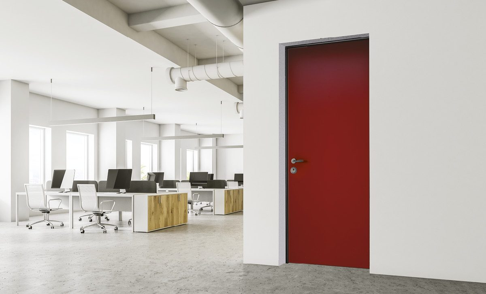

Aluminium-Haustür
Witterungsbeständig, pflegeleicht und in jeder RAL-Farbe lieferbar. Die häufigste Wahl für moderne Fassaden.
- Sehr geringer Pflegeaufwand
- Schlanke, moderne Profile
- Alle RAL-Farben und Dekore
Aluminium- oder Holz-Haustür nach Maß, einbruchhemmend je nach Modell, mit Mehrfachverriegelung und auf Wunsch Fingerprint oder Smart Lock, im Design passend zu Ihrem Garagentor.

Eine gute Haustür sieht nicht nur gut aus, sie hält auch stand. Wir fertigen Ihre Tür nach Maß, stimmen Design und Farbe auf Ihr Haus und Ihr Garagentor ab und statten sie mit der Sicherheitstechnik aus, die zu Ihren Anforderungen passt.
Ob Wohnhaus oder Gewerbeeingang: die passende Ausführung richtet sich nach Nutzung, Optik und Sicherheitsbedarf.
Witterungsbeständig, pflegeleicht und in jeder RAL-Farbe lieferbar. Die häufigste Wahl für moderne Fassaden.

Warme Optik und natürliche Maserung, passend zu einem Echtholz-Garagentor. Lasur oder Deckfarbe nach Wahl.

Robuste Ausführung für Nebeneingänge, Büros und Betriebsgebäude, mit Zutrittstechnik statt Schlüssel möglich.

Damit Garagentor und Haustür wie aus einem Guss wirken, übertragen wir Dekore, Farben und Griffdetails Ihres Tors auf die Haustür. So entsteht ein einheitliches Bild an der gesamten Fassade.
Auch Seitenteile und Oberlichter fertigen wir passend dazu, für mehr Tageslicht im Eingangsbereich.
Designs ansehenEinbruchhemmende Ausführungen je nach Modell, mit verstärktem Rahmen und Sicherheitsverglasung.
Mehrere Schließpunkte in Rahmen und Falz sichern die Tür rundum, nicht nur am Schloss.
Türöffnung per Fingerabdruck, Code oder App, auf Wunsch mit Anbindung an Ihr Smart Home.
Gedämmte Türblätter und umlaufende Dichtungen halten den Eingangsbereich warm und leise.
Zusätzliche Glasflächen neben und über der Tür holen mehr Licht in den Flur.
Aufmaß, Montage und spätere Justierung durch unsere eigenen Servicetechniker.
Richtwerte für die Planung. Die genaue Ausführung legen wir beim Aufmaß mit Ihnen fest.
| Ausführungen | Aluminium-Haustür, Holz-Haustür, Sicherheitstür für Gewerbe und Nebeneingang |
|---|---|
| Maße | Nach Maß, Sonderformate und Sonderhöhen auf Anfrage |
| Material | Aluminium, Echtholz |
| Oberflächen | Alle RAL-Farben, Holzdekore und Lasuren |
| Sicherheit | Mehrfachverriegelung, einbruchhemmend je nach Modell |
| Zutritt | Schlüssel, Fingerprint oder Smart Lock auf Wunsch |
| Extras | Seitenteile, Oberlichter, Wärmedämmung |
| Leistung | Beratung, Aufmaß, Lieferung, Montage und Justierung |

Der Sicherheitsgrad hängt vom gewählten Modell ab: Rahmen, Beschlag, Verglasung und Verriegelung lassen sich einzeln an Ihre Anforderungen anpassen. Wir beraten Sie, welche Ausstattung zu Ihrem Haus und Ihrem Sicherheitsbedürfnis passt.
Ja. Wir stimmen Farbe, Dekor und Designdetails der Haustür auf Ihr Garagentor ab, damit die Fassade einheitlich wirkt.
Ein Smart Lock öffnet die Tür per App, Code oder Fingerabdruck statt mit dem Schlüssel. Praktisch für Familien und bei häufigem Besuch, etwa von Handwerkern oder Lieferdiensten. Ob es sich für Sie lohnt, besprechen wir gern im Beratungsgespräch.
Nach dem Aufmaß erhalten Sie ein Angebot. Die Fertigung dauert je nach Modell und Material mehrere Wochen. Den Montagetermin stimmen wir mit Ihnen ab, sobald der Liefertermin feststeht.
Rufen Sie an oder senden Sie uns Maße und Fotos. Wir melden uns innerhalb eines Werktags.